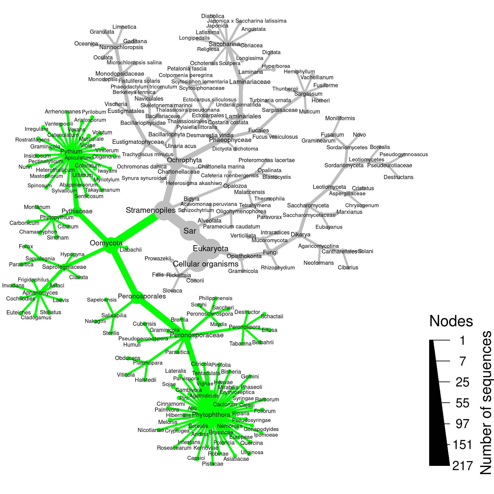

library(ape)
library(metacoder)## Loading required package: taxa## This is metacoder verison 0.3.4 (stable)##
## Attaching package: 'metacoder'## The following object is masked from 'package:ape':
##
## complementlibrary(tibble)These results were generated by Felipe Albornoz using Geneious. They consist of two FASTA files: the reference sequences used for the simulated PCR and the predicted amplicons.
ref_seqs <- read.FASTA(file.path("raw_data", "felipes_sim_pcr_results", "all.ref.seqs.rps10.fasta"))
amp_seqs <- read.FASTA(file.path("raw_data", "felipes_sim_pcr_results", "PCR product.fasta"))I will check that all names in amp_seqs are in ref_seqs
if (! all(names(amp_seqs) %in% names(ref_seqs))) {
stop("All names in `amp_seqs` must be in `ref_seqs`")
}Save location of named seqs in reference
amped_indexes <- match(names(amp_seqs), names(ref_seqs))The taxonomic information in the FASTA headers need to be cleaned up to be useful for computational analysis and presentation.
clean_headers <- function(headers) {
# remove _F , _sp
headers <- sub(headers, pattern = "_F$", replacement = "")
headers <- sub(headers, pattern = "_sp$", replacement = "")
# Remove existing classifcaitons and only use seq ID
headers[grepl(headers, pattern = "_Eukaryota;")] <- gsub(headers[grepl(headers, pattern = "_Eukaryota;")],
pattern = "_Eukaryota;.+$", replacement = "")
# Remove everything after species name
matches <- stringr::str_match(headers, "^([a-zA-Z]+_[a-zA-Z]+).*$")[,2]
headers[! is.na(matches)] <- matches[! is.na(matches)]
headers <- sub(headers, pattern = "_sp$", replacement = "")
headers <- sub(headers, pattern = "_x$", replacement = "")
# Remove underscores
# headers <- gsub(headers, pattern = "([a-zA-Z]{3,})_", replacement = "\\1 ")
headers <- sub(headers, pattern = "Peronosppora", replacement = "Peronospora")
headers <- sub(headers, pattern = "Scleroderma", replacement = "Sclerospora")
return(headers)
}
cleaned_headers <- clean_headers(names(ref_seqs))Some headers have species names, others have genbank ids. I will read in seq ids and names separately and combine classifications. Since looking up the taxonomy data can be unreliable depending on internet connection, I will cache the results of this in an .rds file.
Seq IDs:
seq_id_obj_data_path <- file.path('intermediate_data', 'seq_id_obj.rds')
if (file.exists(seq_id_obj_data_path)) {
seq_id_obj <- readRDS(seq_id_obj_data_path)
} else {
seq_id_obj <- lookup_tax_data(cleaned_headers, type = "seq_id")
saveRDS(seq_id_obj, file = seq_id_obj_data_path)
}
# seq_id_obj <- remove_redundant_names(seq_id_obj)
seq_id_classes <- classifications(seq_id_obj)[names(seq_id_obj$data$query_data)]Seq names:
genus_part <- sub(cleaned_headers, pattern = "^([a-zA-Z]+)_.*$",
replacement = "\\1")
species_part <- sub(cleaned_headers, pattern = "^[a-zA-Z]+_([a-zA-Z]+)$",
replacement = "\\1")I will also save the results of this database search, since it can take a while and it requires manual input when synonyms are encountered, so cannot be included in an Rmd otherwise.
taxon_name_obj_data_path <- file.path('intermediate_data', 'taxon_name_obj.rds')
if (file.exists(taxon_name_obj_data_path)) {
taxon_name_obj <- readRDS(taxon_name_obj_data_path)
} else {
taxon_name_obj <- lookup_tax_data(genus_part, type = "taxon_name")
saveRDS(taxon_name_obj, file = taxon_name_obj_data_path)
}
taxon_name_classes <- classifications(taxon_name_obj)[names(taxon_name_obj$data$query_data)]Combine the classifications from the name and ID searches:
taxon_name_classes[taxon_name_classes != "unknown taxon"] <- paste0(taxon_name_classes, ";", species_part)[taxon_name_classes != "unknown taxon"]
combined_class <- unname(seq_id_classes)
combined_class[combined_class == "unknown taxon"] <- taxon_name_classes[combined_class == "unknown taxon"]Convert to taxmap format for plotting:
obj <- parse_tax_data(combined_class,
datasets = list(original_names = names(ref_seqs)),
mappings = c("{{index}}" = "{{index}}"))This will make the tree cleaner and easier to interpret.
cleaned_obj <- obj %>%
filter_taxa(is_leaf, taxon_names %in% c("Glomus", "Phytophthora"), invert = TRUE) %>%
filter_taxa(grepl(taxon_names, pattern = 'unclassified', ignore.case = TRUE), invert = TRUE) %>%
filter_taxa(grepl(taxon_names, pattern = 'endosymbiont', ignore.case = TRUE), invert = TRUE) %>%
filter_ambiguous_taxa() %>%
filter_taxa(grepl(taxon_names, pattern = "^[a-zA-Z ]+$"))
cleaned_obj$data$tax_data <- tibble(taxon_id = names(cleaned_obj$data$tax_data),
input = cleaned_obj$data$tax_data)I will find which portions of the taxonomy have all of their leaves amplified …
cleaned_obj$mutate_obs("is_amplified",
unlist(leaves_apply(cleaned_obj,
function(x) length(x) > 0 && all(x %in% names(amp_seqs)),
value = "original_names")))## Adding a new "logical" vector of length 420.## <Taxmap>
## 420 taxa: ab. cellular organisms ... rh. graminicola
## 420 edges: NA->ab, ab->ac, ab->ad ... re->rf, rf->rg, rg->rh
## 3 data sets:
## tax_data:
## # A tibble: 217 x 2
## taxon_id input
## <chr> <chr>
## 1 ej cellular organisms;Eukaryota;Sar;Stramenopiles;Oomyc…
## 2 kk cellular organisms;Eukaryota;Sar;Stramenopiles;Ochro…
## 3 om cellular organisms;Eukaryota;Sar;Alveolata;Ciliophor…
## # … with 214 more rows
## original_names: a named vector of 'character' with 217 items
## ej. Achlya_hypogyna_F ... kj. Thraustotheca_clavata_F
## is_amplified: a named vector of 'logical' with 420 items
## ab. FALSE, ac. FALSE, ad. FALSE ... rg. FALSE, rh. FALSE
## 0 functions:amplified_leafs <- cleaned_obj$data$original_names[cleaned_obj$data$original_names %in% names(amp_seqs)]
cleaned_obj$data$is_amplified[names(amplified_leafs)] <- TRUE… and plot those taxa in green:
set.seed(5)
cleaned_obj %>%
filter_taxa(!is_internode) %>%
remove_redundant_names() %>%
heat_tree(node_color = ifelse(is_amplified, "green", "grey"),
node_color_axis_label = "PID to closest other species",
node_size = n_obs,
node_size_range = c(0.005, 0.025),
node_label_size_range = c(0.012, 0.018),
# node_label_size_trans = "log10",
node_size_axis_label = "Number of sequences",
node_label = Hmisc::capitalize(taxon_names),
layout = "da", initial_layout = "re",
background_color = '#FFFFFF',
# overlap_avoidance = 2,
output_file = file.path("results", "rps10_simulated_pcr.pdf"))